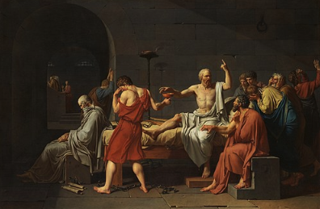

the death of socrates (jacques-louis david, 1787)
the triumph of death (pieter bruegel the elder, c. 1562)
the fall of the rebel angels (pieter bruegel the elder, 1562)
the elephants (salvador dalí, 1948)
the creation of the birds (remedios varo, 1957)
melancholy and mystery of a street (giorgio de chirico, 1914)